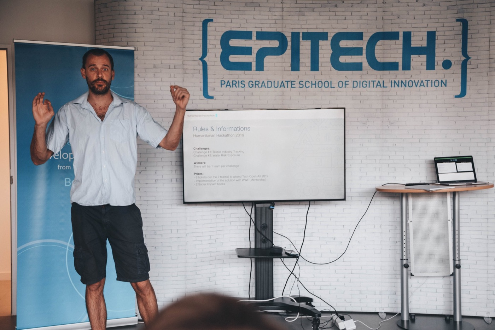

04.1
Introduction to GIS
Core concepts and hands-on practice in ArcGIS and QGIS, for beginners and non-specialists.
Pillar 04 · GIS & capacity building
The best analysis is the one your team can repeat. We run hands-on training and workshops in ArcGIS, QGIS and Google Earth Engine, and coach teams to automate their own workflows.

Background
Our team's teaching experience includes Introduction to GIS at Hochschule Konstanz (HTWG) and CIEE Berlin from 2018 to 2024: about 80 teaching hours a year, training hundreds of students in ArcGIS and QGIS.
Outside the university, our team has trained conservation partners and facilitated workshops with very different audiences, from REDD+ policy workshops with local communities in the Brazilian Amazon to technical sessions with programme teams. Training is available in English, Spanish, German and Portuguese.

What we offer
Hands-on training in ArcGIS, QGIS and Earth Engine for teams that want to build spatial skills in-house and keep the work running.
Core concepts and hands-on practice in ArcGIS and QGIS, for beginners and non-specialists.
Satellite data, land cover classification and change detection in Google Earth Engine, with Python or JavaScript.
Training built around your own data and questions, on-site or remote.
Help to turn manual, repeated GIS tasks into documented, reproducible scripts.
Facilitated sessions that use maps to bring communities, partners and decision makers to the table.
Code, manuals and follow-up support so the work keeps running after the project ends.
Track record
Tell us briefly about your project. We usually reply within one working day.